HTML, CSS, and JavaScript
"HTML provides the basic structure of
sites, which is enhanced and modified by other technologies like CSS and
JavaScript. CSS is used to control presentation, formatting, and layout.
JavaScript is used to control the behavior of different elements."
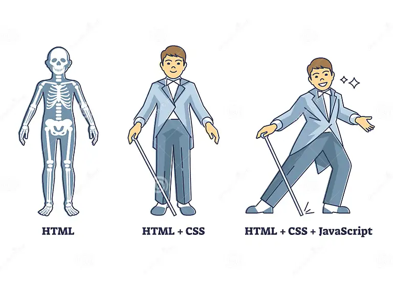
What is HTML?
HTML stands for
Hyper Text Markup Language.
HTML helps you structure your page into elements such as paragraphs, sections, headings, navigation bars, and so on.
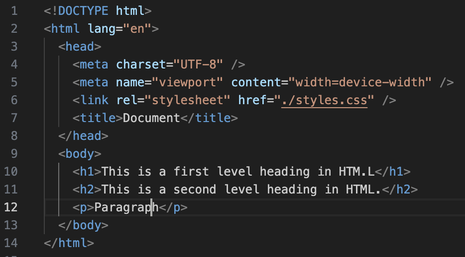
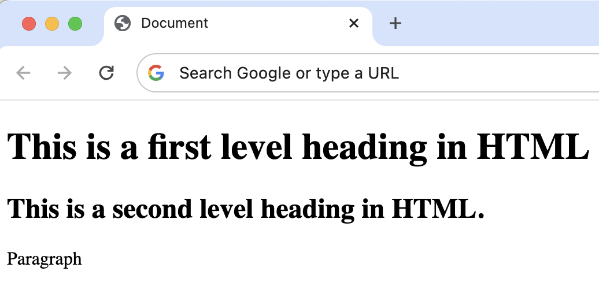
What is CSS?
While HTML is a
markup used to format/structure a web page, CSS is a
design language that you use to make your web page look nice and presentable.
CSS stands for Cascading Style Sheets, and you use it to improve the appearance of a web page.
For example, it can change the color of the level one heading h1 to red.
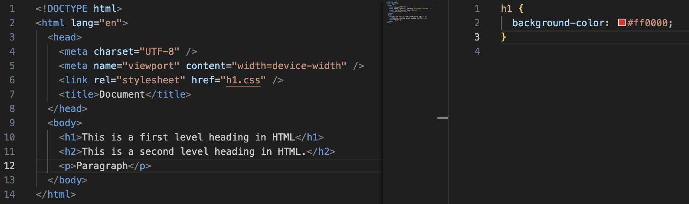
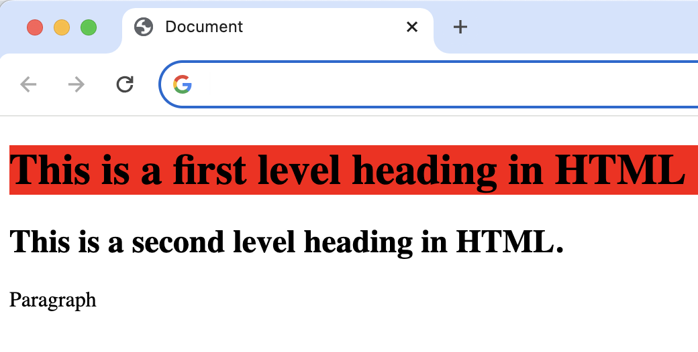
What is JavaScript?
Now, if HTML is the
markup language and CSS is the
design language, then JavaScript is the
programming language.
You can program actions, conditions, calculations, network requests, concurrent tasks and many other kinds of instructions.
For example, you can bring HTML attributes and calculate sum of two numbers with function like below.
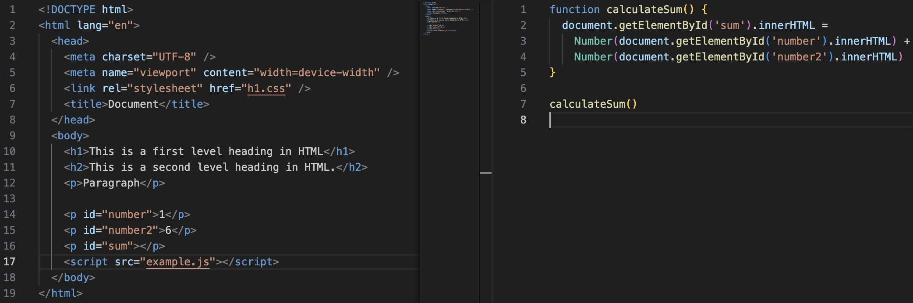
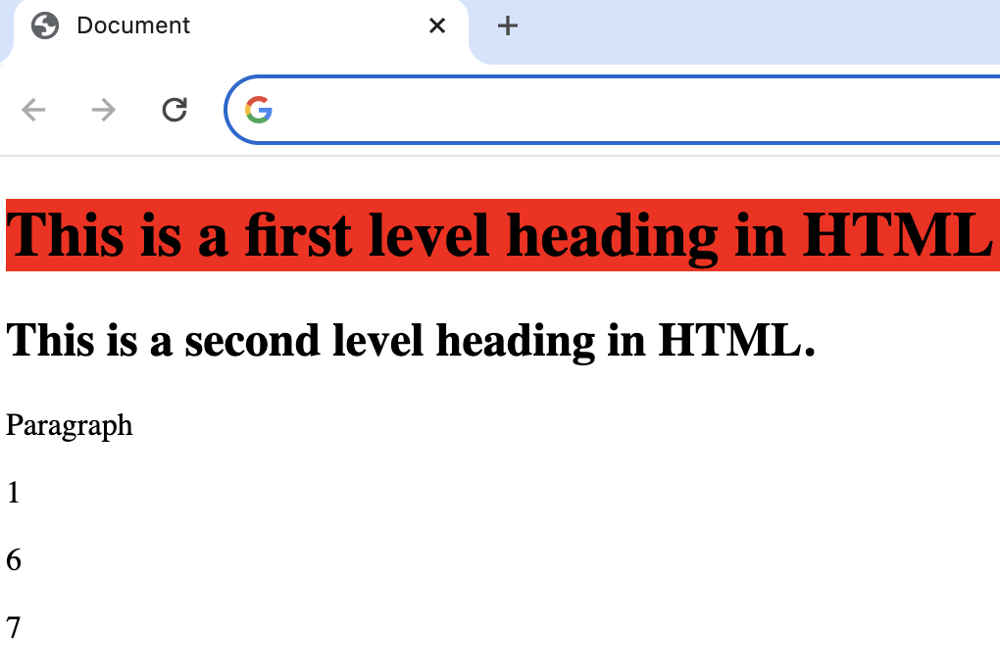
🁀🁈🁊🁓🁘🁟🁜🁡🁍🁀🁈🁊🁓🁘🁟🁜🁡🁍🁀🁈
Control Flow & Loops
What is Control Flow?
The control flow is the order in which the computer executes statements in a script.
Code is run in order from the first line in the file to the last line, unless the computer runs across the (extremely frequent) structures that change the control flow, such as conditionals and loops.
For example, imagine a script used to validate user data from a webpage form. The script submits validated data, but if the user, say, leaves a required field empty, the script prompts them to fill it in. To do this, the script uses a conditional structure or if...else, so that different code executes depending on whether the form is complete or not:
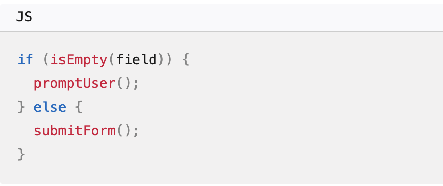
A typical script in JavaScript or PHP (and the like) includes many control structures, including conditionals,
loops and functions. Parts of a script may also be set to execute when events occur.
Now, what is Loops?
Loops offer a quick and easy
way to do something repeatedly.
You can think of a loop as a computerized version of the game where you tell someone to take X steps in one direction, then Y steps in another.
For example, the idea "Go five steps to the east" could be expressed this way as a loop:
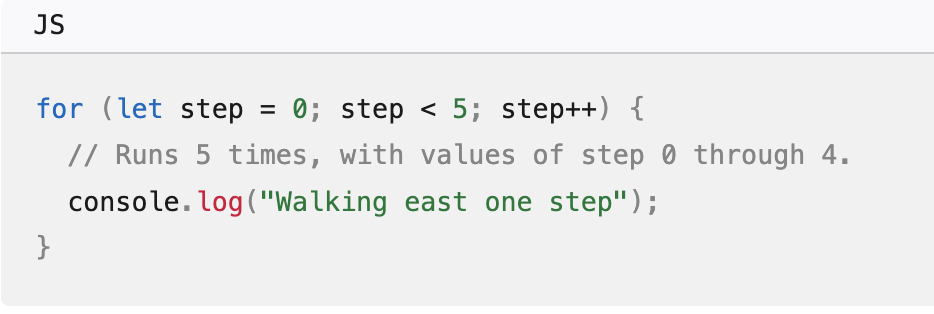
🁀🁈🁊🁓🁘🁟🁜🁡🁍🁀🁈🁊🁓🁘🁟🁜🁡🁍🁀🁈
What is DOM?
"The Document Object Model (DOM) is the data representation of the objects that comprise the structure and content of a document on the web."
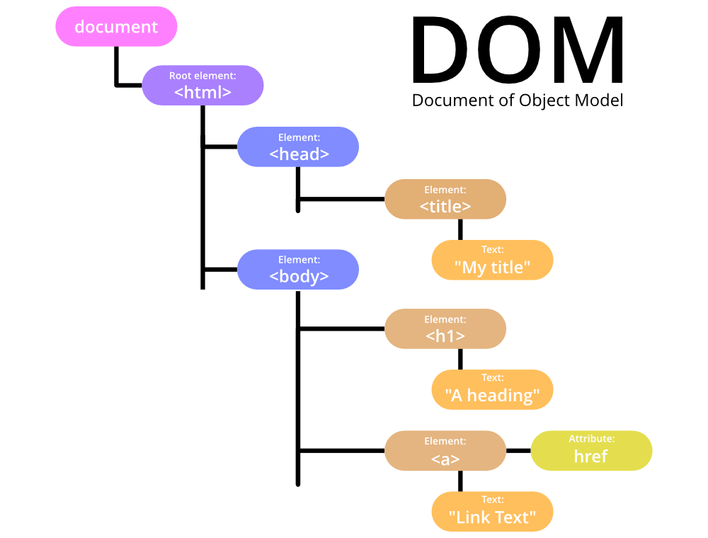
Document Object Model is a commendation of the World Wide Web Consortium. It explains an interface that enables programs to access and modify the style, structure, and contents of XML documents. XML parsers that support DOM implement this interface.
When should one use a DOM parser?
-
Use it when you know a lot about the structure of a document.
-
Use it if you need to use the information in an XML document more than once.
-
You need to move parts of an XML document around.
How to interact with DOM?
In DevTools, you usually interact with the DOM by using the Inspect tool to select elements, and by using the Elements tool to modify the DOM, for example to add or change element attributes or styles. The Console tool can also be used to interact with the DOM by using JavaScript code.
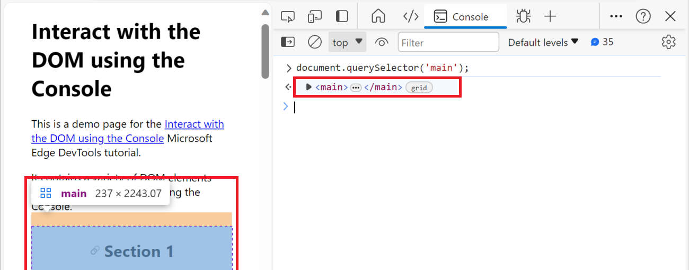
Press Ctrl+Shift+J (Windows, Linux) or Command+Option+J (macOS). The Console tool opens in DevTools, next to the webpage.
🁀🁈🁊🁓🁘🁟🁜🁡🁍🁀🁈🁊🁓🁘🁟🁜🁡🁍🁀🁈
Array & Object
"Objects and arrays (which are a specific kind of object) provide ways to group several values into a single value.
The data inside an array "[]" is known as Elements. The data inside objects "{}" are known as Properties which consists of a key and a value."
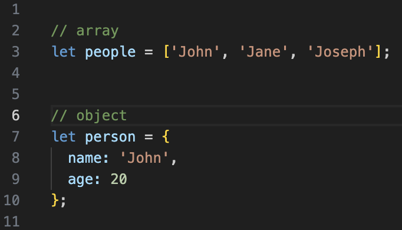
What is Array?
An array in JavaScript is a type of global object that is used to store data. Arrays consist of an ordered collection or list containing zero or more data types, and use numbered indices starting from 0 to access specific items.
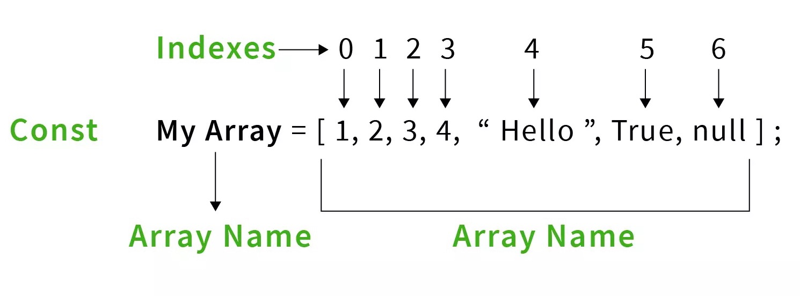
What is Object?
An object is a collection of properties, and a property is "key: value" pair.
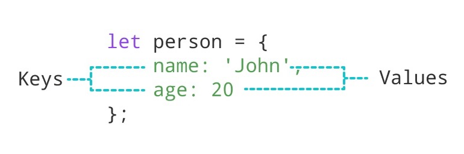
🁀🁈🁊🁓🁘🁟🁜🁡🁍🁀🁈🁊🁓🁘🁟🁜🁡🁍🁀🁈
Function
"A set of statements that performs a task or calculates a value"
What is Function?
Functions are one of the fundamental building blocks in JavaScript. A function in JavaScript is similar to a procedure—a set of statements that performs a task or calculates a value, but for a procedure to qualify as a function, it should take some input and return an output where there is some obvious relationship between the input and the output. To use a function, you must define it somewhere in the scope from which you wish to call it.
It can take one or more input(parameter) and can return output as well. Both, taking input and returning an output are optional.
- It can take one or more input and can return output as well. Both, taking input and returning an output are optional.
- For repetitive tasks like displaying a message whenever a web page is loaded into the browser, we can use functions.
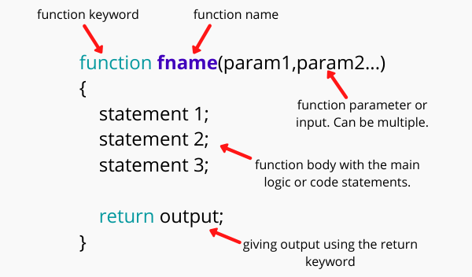
🁀🁈🁊🁓🁘🁟🁜🁡🁍🁀🁈🁊🁓🁘🁟🁜🁡🁍🁀🁈
 Javascript-DOM
Javascript-DOM